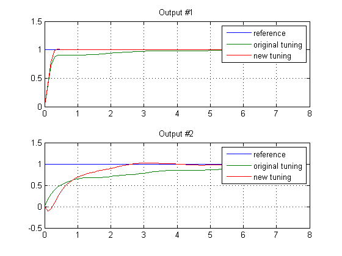

Sensitivity Analysis Based MPC Tuning
Contents
This demonstration shows how to compute numerical derivatives of a closed-loop cumulative performance index with respect to weights and use them to improve MPC performance.
Plant Model
mpcverbosity('off') plant = ss(tf({1,1,2;1 -1 -1},{[1 0 0],[1 0 0],[1 1];[1 2 8],[1 3],[1 1 3]}),'min');
Controller Setup
Create an MPC controller with initial design parameters.
Ts = 0.1; % Sampling time p = 20; % Prediction horizon m = 3; % Control horizon mpc1 = mpc(plant,Ts,p,m);
Set constraints on manipulated variables and their rates of change.
for i = 1:3, mpc1.MV(i).Min = -2; mpc1.MV(i).Max = 2; mpc1.MV(i).RateMin = -4; mpc1.MV(i).RateMax = 4; end
Set weights on output variables.
mpc1.Weights.OutputVariables = [1 1];
Set weights on the rates of manipulated variables.
mpc1.Weights.ManipulatedVariablesRate = [.1 .1 .1];
Weights on manipulated variables remain as the default values [0 0 0].
Performance Evaluation Setup
The default closed-loop performance is expressed through a set of weights that reflect the desired closed-loop behavior. The weights are contained in a structure with the same fields as the Weights property of an MPC object.
PerformanceWeights = mpc1.weights;
In this example we make output weights more important than weights on MV rates in evaluating closed-loop performance.
PerformanceWeights.OutputVariables = [100 100]; PerformanceWeights.ManipulatedVariablesRate = [1 1 1];
Note that "PerformanceWeights" is only used in the cumulative performance index computation. It is not related to the weights specified inside the MPC object.
Simulation Setup
In this example, we only inspect the setpoint tracking scenario for the sensitivity analysis.
Tstop = 80; % time steps to simulate r = ones(Tstop,1)*[1 1];% set point signals v = []; % no measured disturbance simopt = mpcsimopt; simopt.PlantInitialState = zeros(8,1);
Compute Sensitivities
[J1, Sens1] = sensitivity(mpc1, 'ISE', PerformanceWeights, Tstop, r, v, simopt); disp('') disp('--------------') disp('Sensitivity analysis') disp('--------------') disp('') fprintf('Output weights: dJ/dWy = [%g, %g]\n',Sens1.OutputVariables); fprintf('Input weights: dJ/dWu = [%g, %g, %g]\n',Sens1.ManipulatedVariables); fprintf('Input-rate weights: dJ/dWdu = [%g, %g, %g]\n',Sens1.ManipulatedVariablesRate); disp('--------------') disp('')
-------------- Sensitivity analysis -------------- Output weights: dJ/dWy = [-27345.7, 27166] Input weights: dJ/dWu = [3.35253, -125.842, -35.1205] Input-rate weights: dJ/dWdu = [-7.29125, 10250.2, -8369.86] --------------
Adjust MPC Weights
Since we always want to reduce closed-loop cumulative performance index J, in this example the derivatives with respect to output weights show that the weight on y1 should be increased, as the corresponding derivative is negative, while the weight on y2 should be decreased.
mpc2 = mpc1;
Sensitivity less than 0 suggests increasing output weight from 1 to 2.
mpc2.Weights.OutputVariables(1) = 2;
Sensitivity greater than 0 suggests decreasing output weight from 1 to 0.2.
mpc2.Weights.OutputVariables(2) = 0.2;
Note that the sensitivity analysis only tells you which direction to change the parameters, not how much. Trial and error is expected.
Verify Performance Changes
[y1, t1] = sim(mpc1, Tstop, r, v, simopt); [y2, t2] = sim(mpc2, Tstop, r, v, simopt); h = figure; subplot(211) plot(t2,r(:,1),t1,y1(:,1),t2,y2(:,1));grid legend('reference','original tuning','new tuning') title('Output #1') subplot(212) plot(t2,r(:,2),t1,y1(:,2),t2,y2(:,2));grid legend('reference','original tuning','new tuning') title('Output #2')
Verify Cumulative Performance Index is Reduced
Recompute just the cumulative performance index using the same performance measure.
J2 = sensitivity(mpc2, 'ISE', PerformanceWeights, Tstop, r, v, simopt); fprintf('Previous Cumulative Performance Index J1 = %g\n',J1); fprintf('New Cumulative Performance Index J2 = %g\n',J2);
Previous Cumulative Performance Index J1 = 128645 New Cumulative Performance Index J2 = 116234
Note that the absolute value of the cumulative performance index is not important.
Use a User-Defined Performance Function
This is an example of how to write a user-defined performance function used by the sensitivity method. In this example, custom function mpc_performance_function.m illustrates how ISE performance index is implemented.
J3 = sensitivity(mpc1,'mpc_performance_function',Tstop,r,PerformanceWeights); fprintf('User Defined Cumulative Performance Index J3 = %g (same as J1).\n',J3); mpcverbosity('on')
User Defined Cumulative Performance Index J3 = 128645 (same as J1).